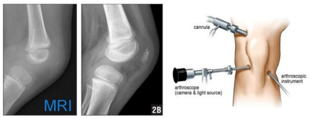

Efficient methods of data acquisition and visualization in Vibroarthrography
Final presentationLeysan Nurgalieva
Supervisor: prof. Yannis Velegrakis
The Method
The patent of Dr.Czernicki (US 20040054302 A1)
Non-invasive diagnostic tool recording acoustic signals from the human knee during the movement of the leg to detect articular cartilage degeneration
Knee Osteoarthritis
 Risk for > 50 age
Risk for > 50 age
Popular methods 
My Contribution and Objectives

- Tablet Computer application design and development
- Measurement procedure support for patients and medical staff
- VAG graphs integration into application to explore methods of improvement based on the basic populationbr
Two Main Problems
Patient Engagement
 Examination process
Examination process
Conclusions and Future Work